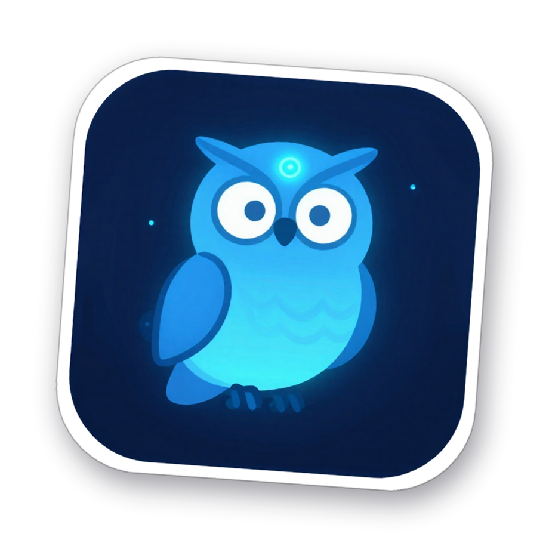

watchmen
Who watches the watchmen? A companion Claude Code session beside your working ones: it keeps a board of your tickets, merge requests, sessions and todos, and tells you only what needs you.
The board
┌─ ⚛ watchmen ──────────────────────────┐ │ Needs you (2) │ │ ◆ [mr] !412 frames — 2 new comments │ │ • [todo] Review deck v3 │ │ Moving (1) │ │ • [session] APP-11249 — slice 2/4 │ │ Waiting (1) │ │ • [jira] APP-11560 — backend fields │ └────────────────────────────────────────┘
Tell it what to track in plain words. Each item can carry a check, any command on your machine whose output tells its state (gh, glab, acli, git). A check runs only after you approve that exact command. When an output changes, the watch wakes, sorts the item into its lane with a one-line note, and notifies you if it needs you.
| Needs you | You must act or decide. |
| Moving | It advances without you. |
| Waiting | It waits on someone else. |
A charter, not an agent loose on your machine
It runs the ambient-companion process under a charter of what it may do alone, must ask first, and never does. It never writes product code and never acts in your other sessions: it watches, sorts and asks. It stays on all day on sonnet and hands any task you give it to an opus subagent; before its cache goes cold it writes a handoff and starts small again.
In herdr
As a herdr plugin, one key summons the watch beside whatever tab you are on and a second sends it home. Follow mode brings it along as you switch tabs, and the sidebar shows each space's state: ⚛ 2 need you, ⚛ 1 changed, ⚛ quiet.
Install
git clone https://github.com/pelayomendez/watchmen npx skills@latest add pelayomendez/pelayo-skills ln -s "$PWD/watchmen/bin/watchmen" ~/.local/bin/watchmen cd <your workspace> && watchmen
# in herdr
herdr plugin install pelayomendez/watchmen --ref v0.2.0
Needs Claude Code 2.1.287 or newer and Node.js 20. Requirements, key bindings and the full board reference in the README.